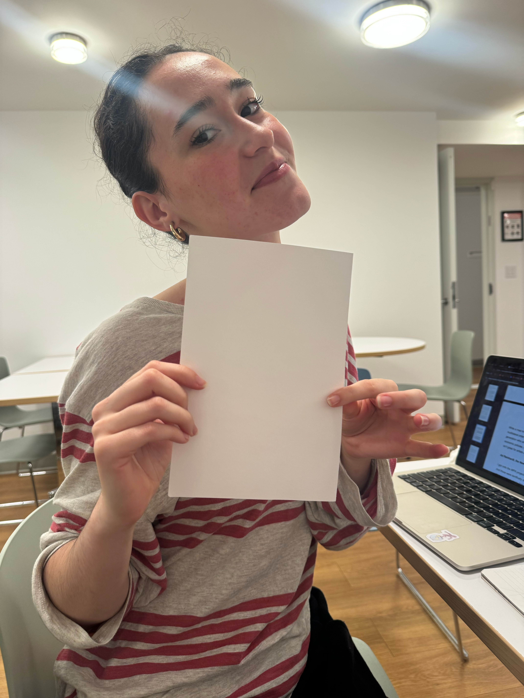
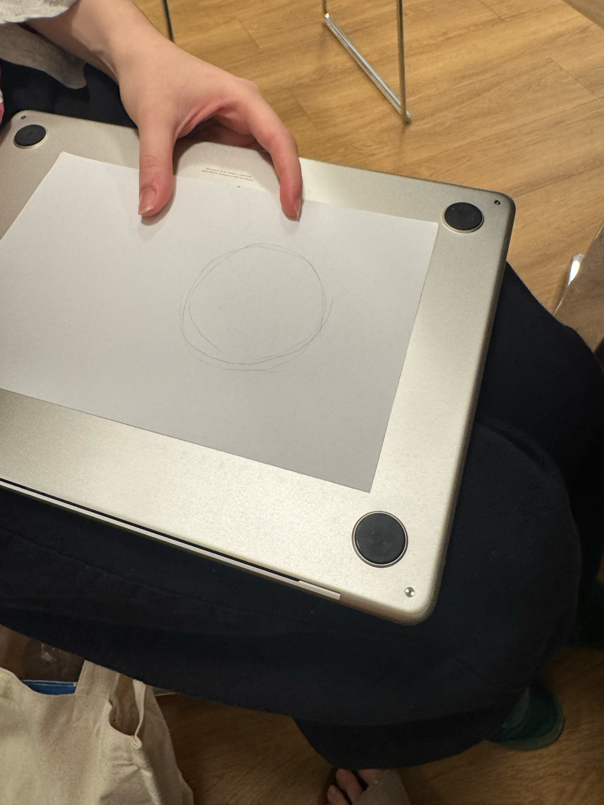
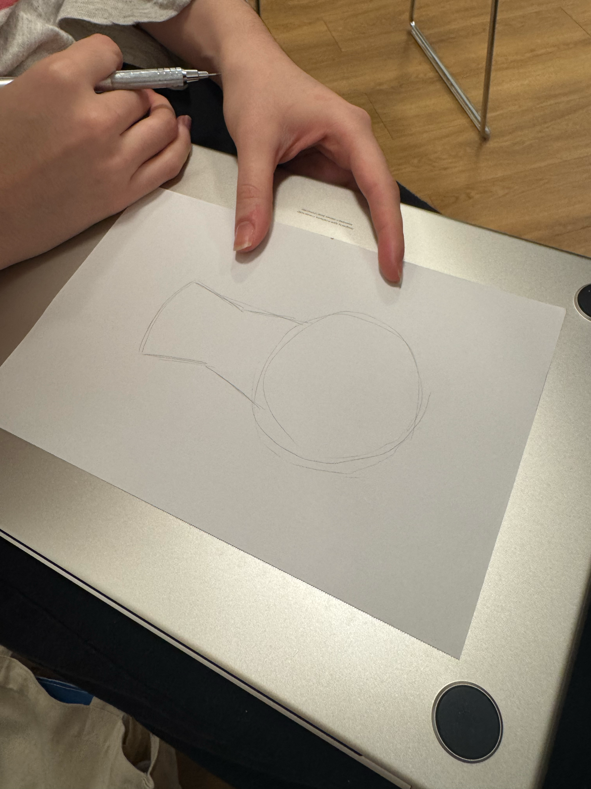
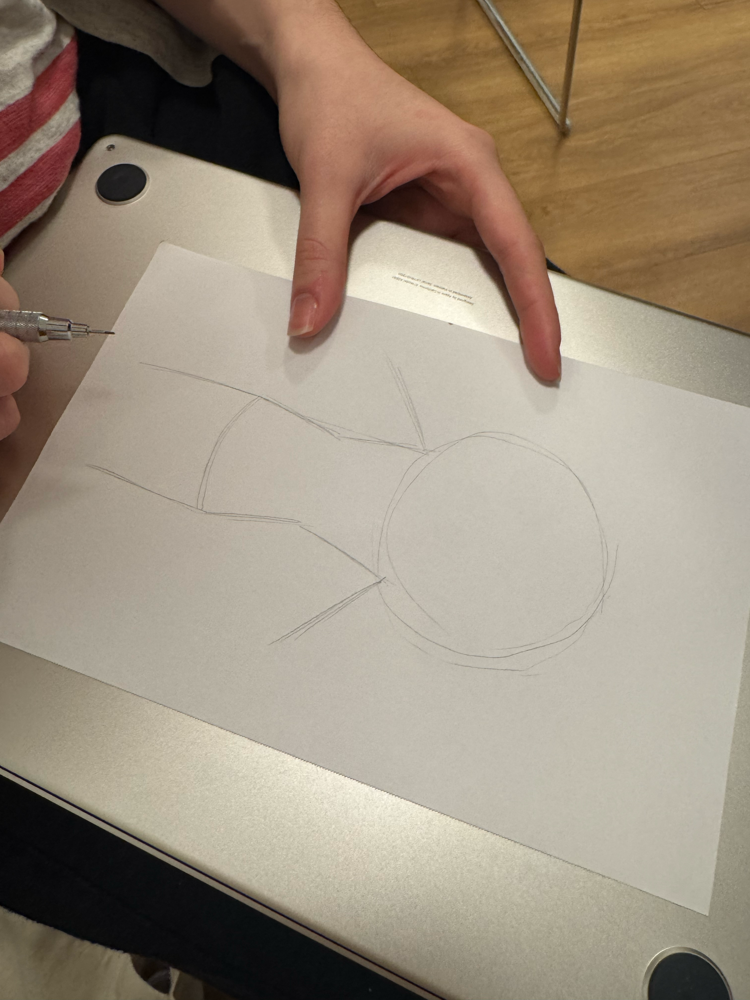
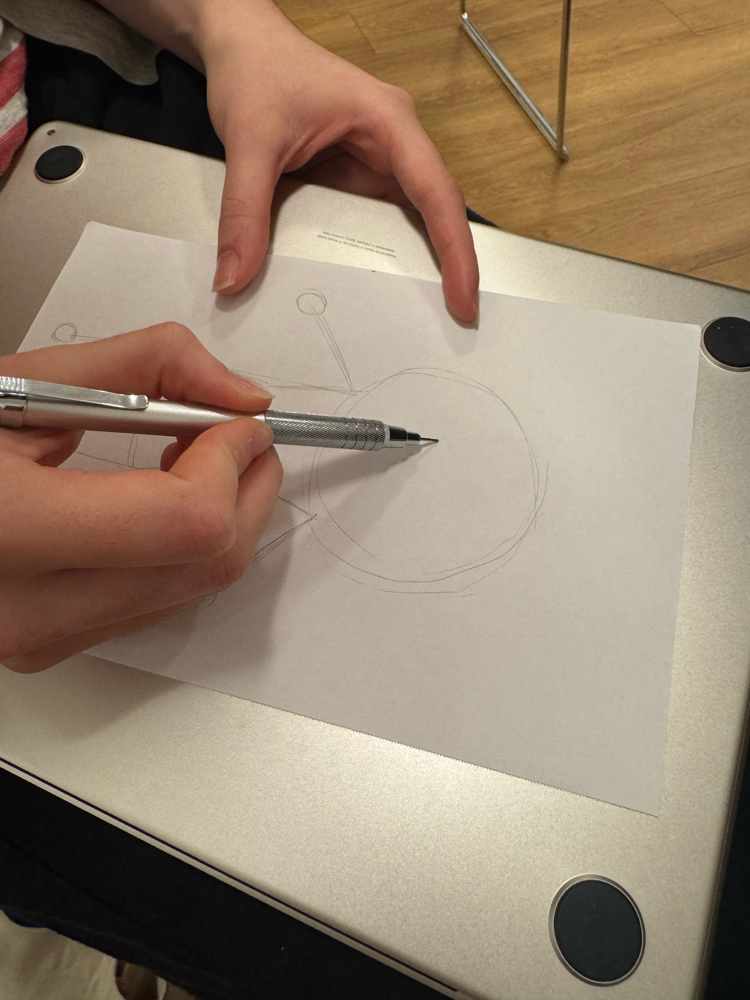
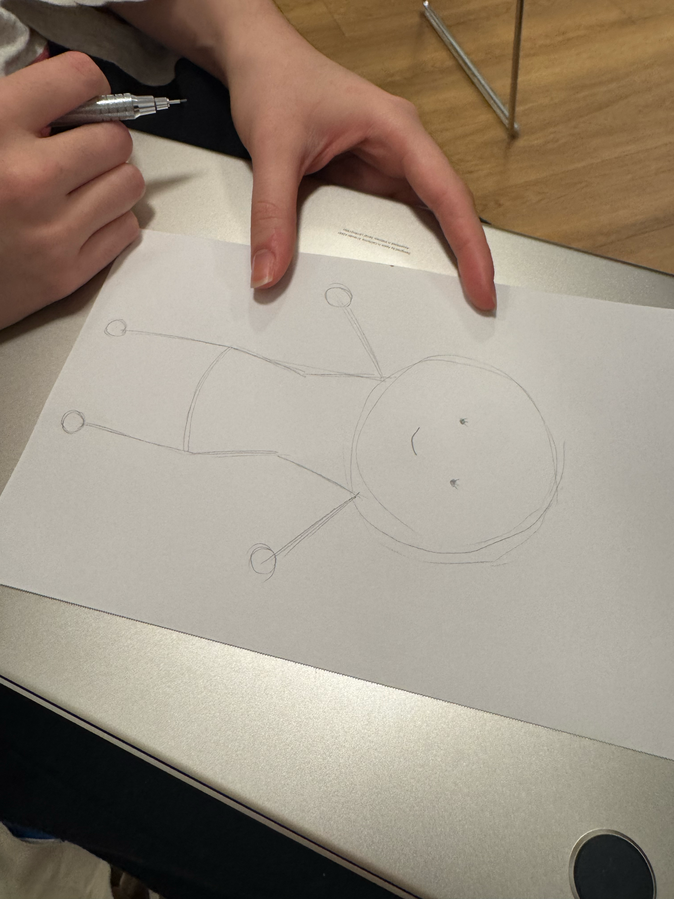
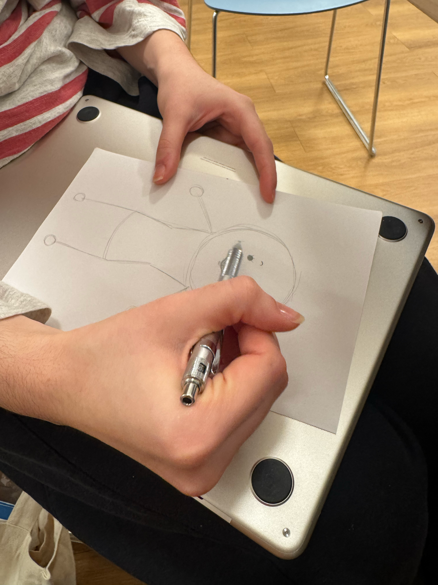
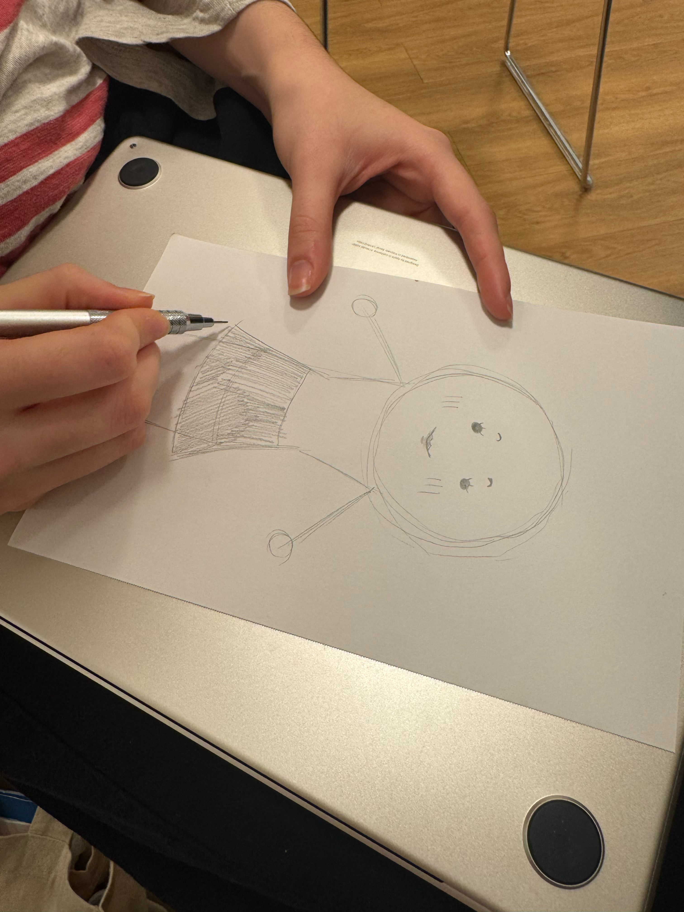
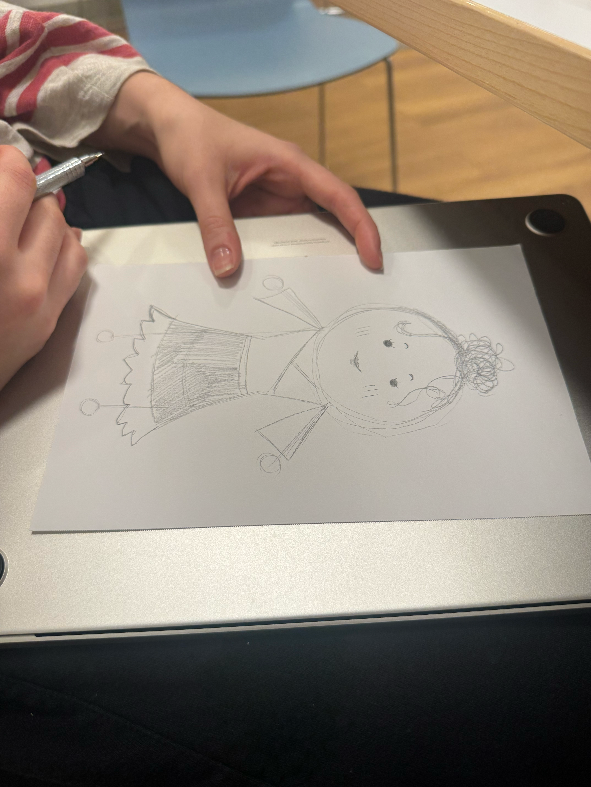
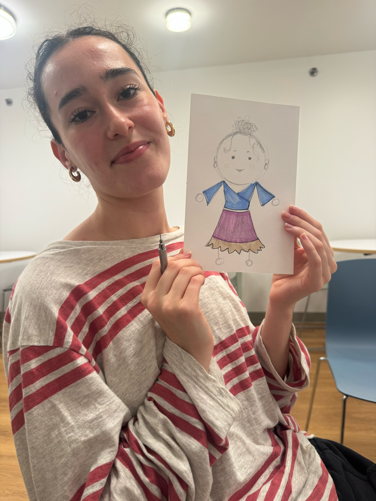

Why hello :3 What a fabulous night we have tonight. We will be cooking up an art piece, taught by yours truely, Jackson Stewart Garten.
Join me and my victim :D

Sindhu was tasked with following the instructions, requests, the recipe I provided her.
As any good drawing does, this one starts with a circle.I had my artist start with a circle for the head.

What would a head be without an attachment! The artist was then instructed to draw a rectangle for the body. Now, while a rectangle is the step, I also instructed the artist to take free liberties and wills. So, the artist gave the character some shape and form.

What is a body without limbs! Well a torso. So, the artist added limbs, two legs, two hands.

What are the limbs without-! Ok I've said this thrice already. As artists, we all know the struggles of drawing hands. So, easiest option is to make then circles! I instructed the artist casually draws the circles, and boom thats it.

Let there be light!Or, let the character see and speak. I instruct the artist to utalize simple dots and lines for the face, implying what is on the circle. However, the artist said quote, "I can't look at the face its creeping me out."

This is where I took a step back. My personal art style is simple, but still differenciates people, and embraces our unique traits and differences. So, I had the artist add her own personal touches, and make the figure her. The artist added her outfit from the day, a skirt, foldover top, and bun.



*Note that color is not required, but I brought markers in case the artist wanted to color.

If you want to do it yourself, follow the recipe below!